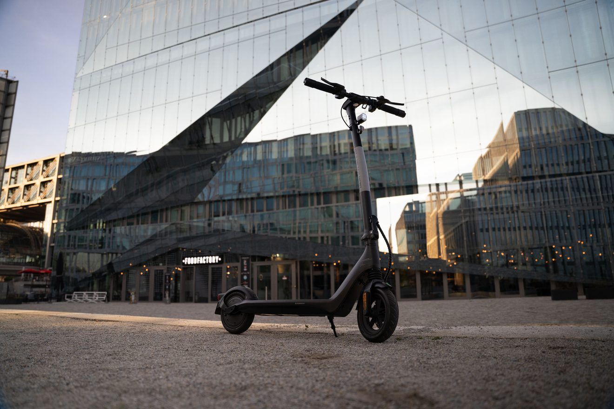
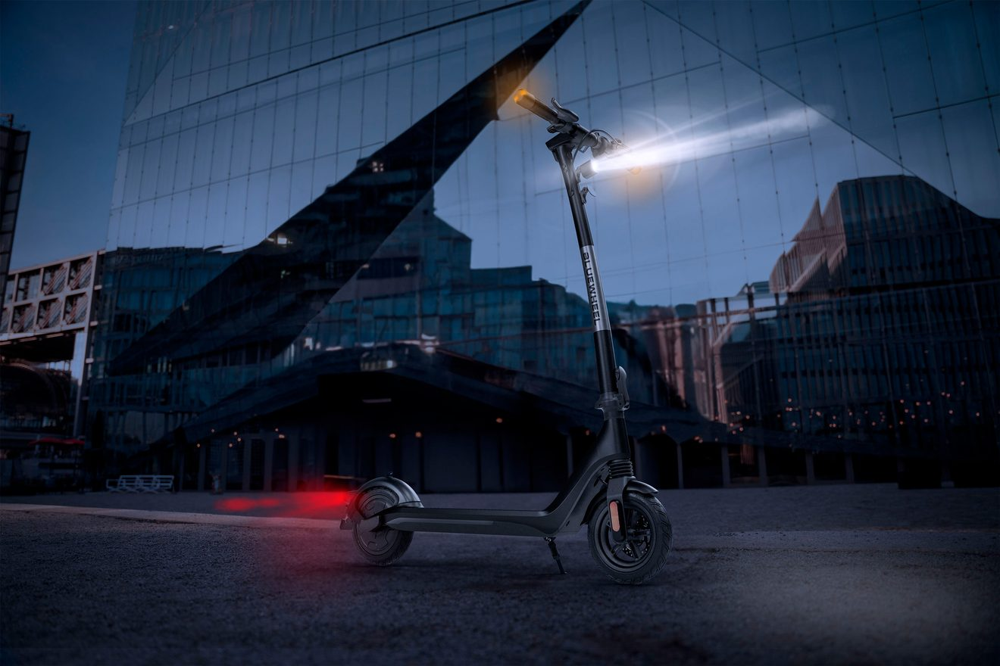

PHOTO RETOUCHING · 3D COMPOSITING
Photo + 3D Manipulation
Blending studio-grade photo retouching with 3D product renders to craft a hero advertising key visual for an e-scooter — built to convert online.
Final advertising key visual — e-scooter night campaign.
OVERVIEW
One image, two crafts.
During my time at Sportstech I produced a high volume of product-photography retouches for the e-commerce catalogue — cleaning plates, correcting colour and light, fixing perspective and removing on-set distractions so every product looked its best.
For the hero campaign visuals I went further, combining those retouched photographs with 3D renders of the scooter. Compositing the CGI elements into the real scene let me control product detail, lighting and atmosphere precisely — producing a polished advertising image designed to drive online sales.
BEFORE / AFTER
From raw capture to final key visual

BEFOREOriginal on-location capture — natural dusk light, untreated straight out of camera.

AFTERRetouched & composited — night grade, headlight beam and red taillight glow added.
PROCESS
How it came together
01
Retouching
Clean the plate, correct perspective, balance colour and light, and remove on-set distractions from the source photograph.
02
3D Rendering
Model and stage the scooter’s key details in Blender for crisp, accurate and fully art-directable product geometry.
03
Compositing
Integrate the 3D render into the photographed scene, matching camera angle, perspective and contact shadows.
04
Grade & Light FX
Build the night-time mood — headlight beam, red taillight glow and a final colour grade tuned for advertising.